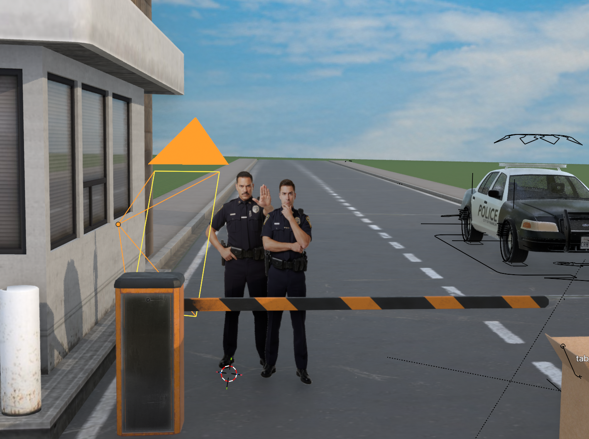
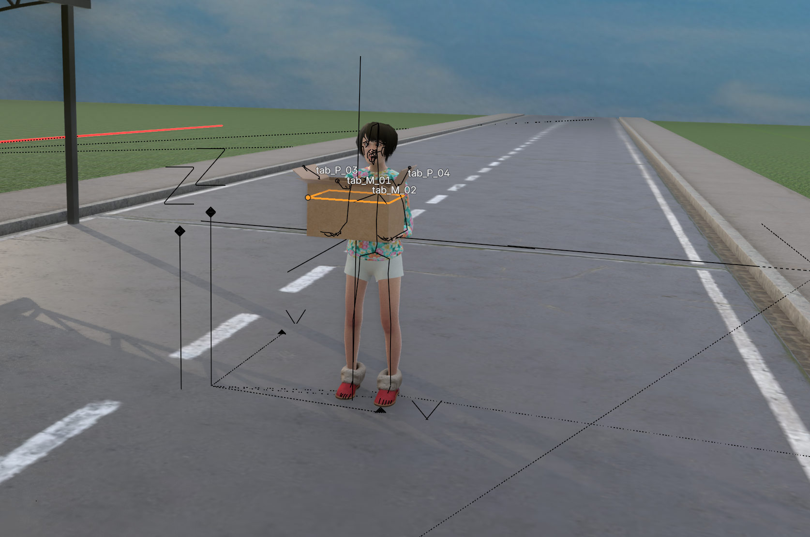
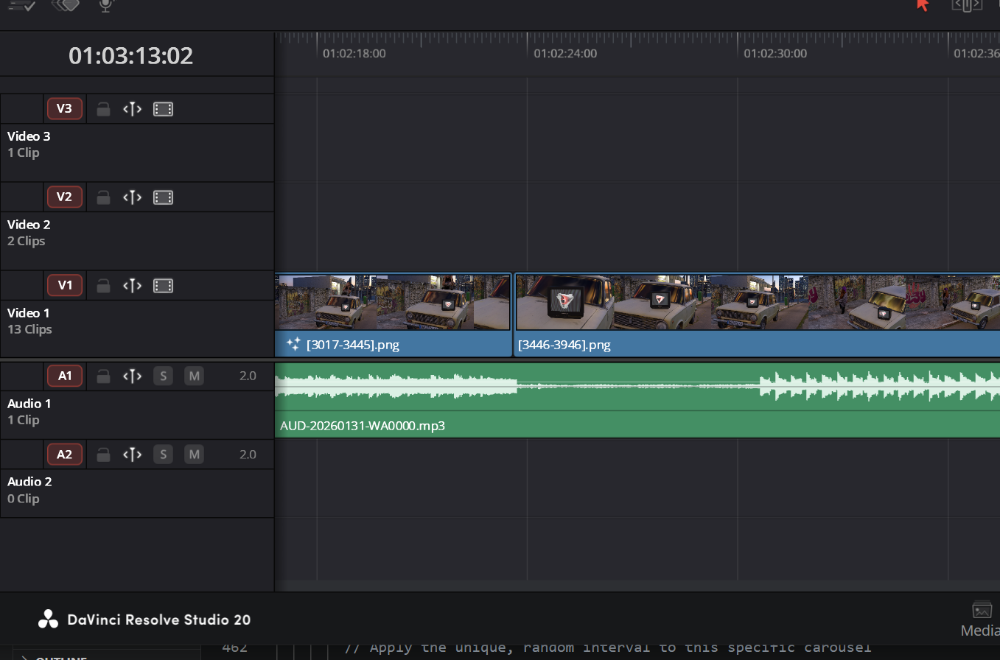

Technical Breakdown
Scripting & Green Screen
I started by recording myself acting out the lines against a DIY green screen. I focused on over-the-top expressions to catch people's attention as they scrolled.
I brought the footage into DaVinci Resolve to key out the background and chop the performance into 6 or 7 main scenes.
I exported these as clips with transparent backgrounds (alpha channels), ready to be dropped straight into my 3D scenes.

Building the environment
I used blenderkit among other free assets, combining models and building eye-catching environments sprinkled with easter eggs relevant for my audience.
To stay organized, I used a modular project setup, duplicating my base environment for each scene so the lighting and look stayed consistent throughout the story.

Camera Animation
In short-form video, if the camera stops moving, people stop watching. I used constant, exaggerated camera movement to keep the energy high.
I framed everything so the action stayed at the 75% height mark (the "eyeline"). This ensures the viewer always has the action in focus.
I made sure the camera’s finishing position in one scene perfectly matched its starting position in the next for a smooth, continuous feel.

Character Animation
I used a combination of 2D and 3D characters. The 2D characters were animated by switching png cutouts of the same character in different poses one frame after another while the 3D characters were animated in a more standard frame by frame approach for every part of the rig.

Final Edit & Polish
Once the frames were rendered out of Blender, I brought the PNG sequences back into Resolve for the final assembly.
I layered the voiceover with sound effects and added UI elements like "Like" stickers.
After a final color pass and thumbnail design, the videos were ready for my channel, Povesti cu Petru
